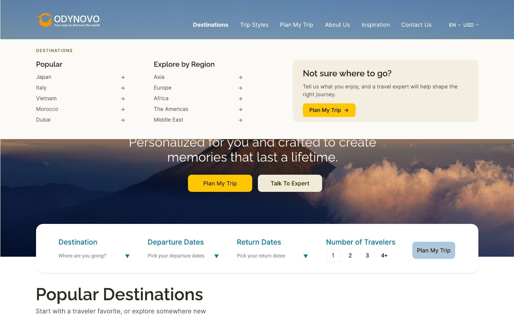
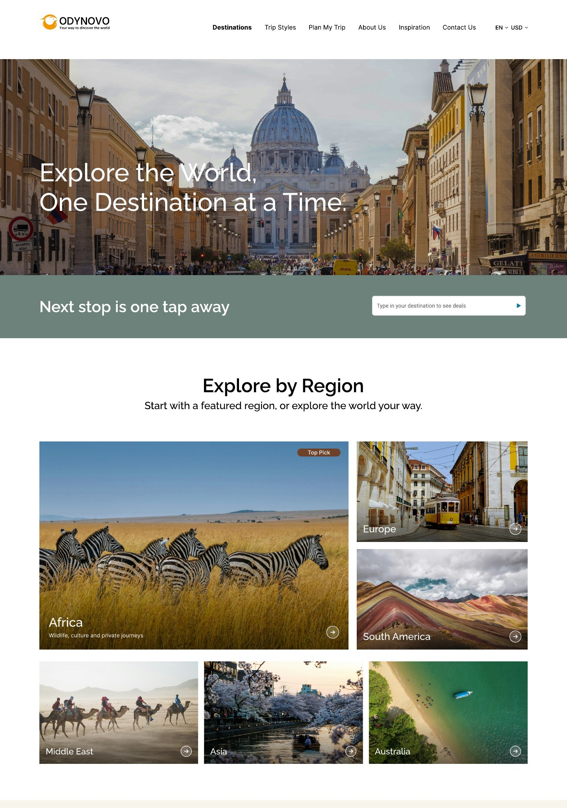
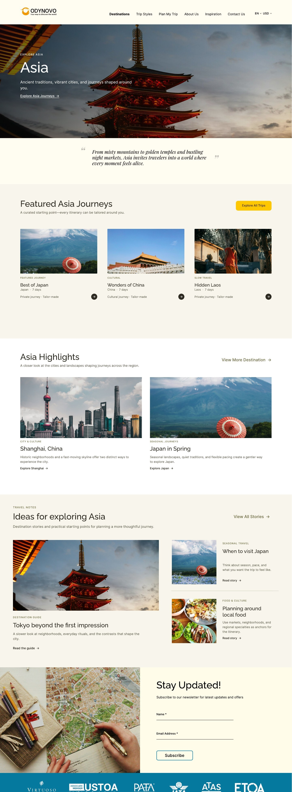

Project Overview
Making tailor-made travel easier to explore
Odynovo Tours creates private, tailor-made trips for travelers seeking a
more personal alternative to standard group tours. However, the website’s
dense content and broad navigation made it difficult to know where to
begin, explore destinations, and compare trip options.
Through a structured review of the site’s content, navigation, and key
browsing pages, I redesigned the experience around clearer entry points
and more focused trip information—helping travelers move more confidently
from inspiration toward inquiry.
Research & Key Insights
Understanding the brand, audience, and market
Before redesigning the interface, I reviewed Odynovo’s positioning,
defined its priority audiences, and compared the experience with other
private-tour brands to establish a clearer design direction.
01
Brand Review
Through the brand review, I identified Odynovo’s core strengths as personalized service, reliable planning, and trusted local expertise. The website needed to communicate these qualities through a clearer and more contemporary experience.
02
Target Audiences
Based on the research, I identified three priority audiences: older travelers seeking reassurance, families balancing different needs, and busy professionals looking for a more efficient planning experience.
03
Competitive Benchmark
Based on Odynovo’s private, tailor-made travel positioning, I selected Audley Travel, Kensington Tours, and Abercrombie & Kent. The comparison highlighted browsing by destination and travel interest, richer trip summaries, and more visible expert support.
04
Research Direction
Bringing these findings together, I saw an opportunity to organize the experience around three decisions: where to go, what type of trip fits, and when to ask for expert help.
This audit reflects the website experience available at the time of the academic redesign.
Key Problems
Useful content was competing for attention
Travelers arrived ready to explore or plan a trip, but products,
destinations, and consultation content competed for attention. Tour
previews offered few useful comparison cues, while the destination
navigation exposed a long list of places without a clear starting point.
Odynovo's tailor-made service was also difficult to distinguish from its
standard tour content. New visitors had to open options one by one before
knowing whether a trip fit their interests or when to ask for expert help.
Before
Long destination list

The original dropdown exposed many destinations at once, making browsing
feel broad but less guided.
After
Structured mega menu

I reorganized the menu into popular destinations, regional browsing, and
a visible planning prompt so users could either explore or ask for help.
Design Decision 01
Turning destination browsing into a guided entry point
Instead of treating destinations as a long list, I redesigned the
destination section as a set of visual entry points. A larger featured
destination gives users a clear place to start, while the smaller region
cards let them continue browsing by geography.
Each image works as a clickable entry point. The hover state reveals a
clearer action, helping users understand that they can explore a specific
destination or region without adding more visible text to the default view.

Destination discovery module with a featured pick and regional entry points.
Design Decision 02
Making trip options easier to compare
I reframed tours as starting points rather than fixed products. The new
cards prioritize journey type, destination, duration, and a light arrow
affordance, allowing the imagery and essential information to do most of
the work without repeating heavy buttons across the grid.
A quieter filter and customization message support users who want to
narrow the list or use an existing itinerary as the basis for a
tailor-made trip.
Before
Dense tour cards
Tour cards included useful information, but the repeated structure made
the section feel crowded and harder to compare quickly.
After
Editorial journey browsing
I simplified each card and reduced repeated interface chrome, making the
collection easier to scan while keeping customization visible at the
section level.
Final Design
A clearer path from inspiration to inquiry
The final direction connects three levels of the experience: a homepage
that offers immediate planning and discovery routes, a destination page
for comparing journeys, and a regional landing page that combines
featured trips with deeper editorial inspiration.
The result is a more structured travel website that still feels warm and
visual, while making the next step visible without turning every module
into a competing call to action.

Asia landing page: the same discovery system extends from featured journeys to destination highlights and planning content.
Outcome
Research-led structure, not just a visual refresh
This project helped me practice translating brand and audience research
into concrete design decisions. The redesign focused on aligning
Odynovo’s promise of personalized, stress-free travel with a clearer
website structure, more focused navigation, and simpler trip browsing.